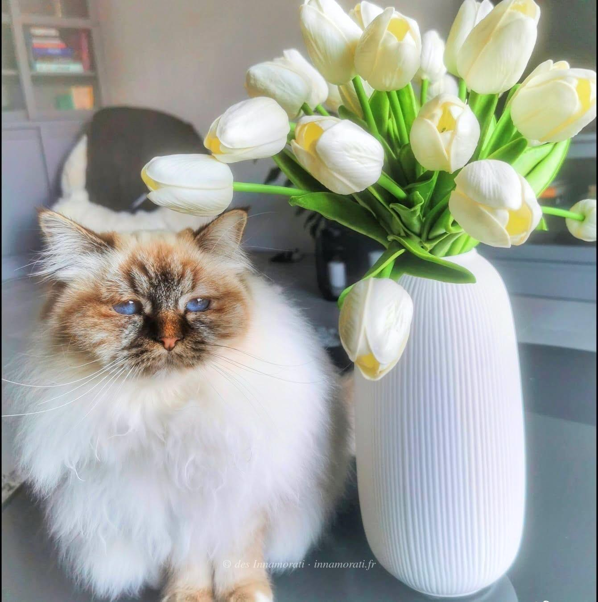

RobeFemelle · Chocolat tabby point
StatutAdoptée
Album8 photos, de février 2022 à décembre 2024
Frères et sœursTi Amo des Innamorati, Tia des Innamorati, Toscane des Innamorati
Demi-frères et sœurspar sa mère : 2020 avec Crowned Dream Quinten, 2021 avec Crowned Dream Real Sugar Daddy
par son père : 2021 avec Crowned Dream Kacey, 2022 avec Crowned Dream Kacey, 2022 avec Sanae, 2022 avec Crowned Dream Lizz
par son père : 2021 avec Crowned Dream Kacey, 2022 avec Crowned Dream Kacey, 2022 avec Sanae, 2022 avec Crowned Dream Lizz


Vous êtes sa famille ?
Racontez-nous Tamara
Son caractère, ses petites manies, ce que vous aimez chez Tamara, et quelques mots sur votre expérience avec notre élevage : nous les ajouterons à cette page, avec votre prénom seulement.
Pour les photos, envoyez-nous vos plus belles par e-mail ou par l’application Messages de l’iPhone : WhatsApp les compresse et elles perdent en qualité.
Photos réduites et marquées. Elles appartiennent à la Chatterie des Innamorati et ne peuvent pas être reprises dans une annonce.